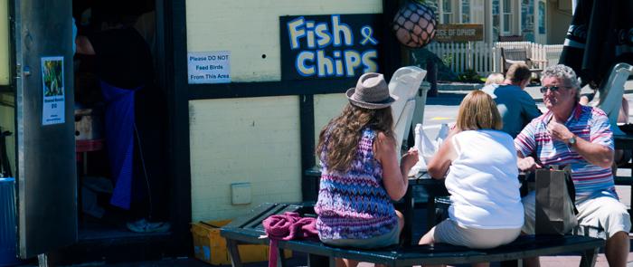
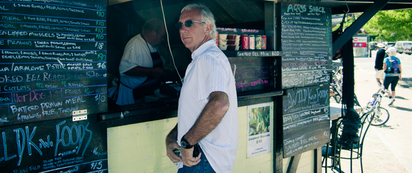

글레노키, 와나카
오늘은 피곤함이 최고조에 달했던 날입니다. 아침에 눈을 뜨는것 조차 힘들고, 몸을 일으키고 움직이는 것은 마치 지게를 지고 있는 것 마냥 힘들었습니다. 피곤이 쌓여서 뒷목이 땡기고, 폭발해버릴 것만 같은 하루였습니다.
퀸스타운 근처엔 볼거리도 무척이나 많습니다. 유명한 건 번지점프나 래프팅 등, 스포츠 액티비티가 풍부하지요. 또한 주변에 작은 마을인 Arrowtown이나 Glenorchy등도 있습니다. 원래 계획은 번지 점프를 한 후 Arrowtown을 구경하고 Wanaka로 가는 것이었습니다.
하지만, 다 접고, Glenorchy들렀다가 Wanaka로 가기로 했습니다. 번지는 아내가 뛸리가 만무하고, 혼자 가서 뛰고 오기엔 피곤함이 극도에 달해 별 흥이 날것 같지 않더군요.
Glenorchy
글레노키로 가는 길은 드라이브하는 기분으로 가기 좋았습니다. 퀸스타운 에서부터 이어지는 호숫가를 따라 가는 길은 여전히 최고입니다. 한여름임에도 사라지지 않는 만년설과 에메랄드빛 호수가 눈을 가득 채웁니다.
전혀 예정없이 글레노키에 오다보니 무엇을 해야 할지도 몰라 차를 세우고 근처 산책을 했습니다. 목적이 있어 온것이 아니기에 그저 느긋하게 걸으며 아내와 이야기를 합니다. 맑은 공기에 즐거운 대화가 휴식을 취하는 느낌을 나게 하네요.
하지만 먹거리도 별로 없고, 걷는것 산책하는 것 외에는 그다지 즐길 거리도 있어보이지 않네요. 느긋하게 쉬다가 다시 퀸스타운 으로 가기로 합니다. 가서 점심먹어야지요.
입구에서 사진 한번 찍어줍니다. 그래도 온 기억은 남겨야겠기에 ^^
Qeenstown
퀸스타운에 온 목적은, 어제 먹어보지 못했던, 맛있다고 소문난 Fish & Chips를 먹어보기 위함입니다. 여기 Fish & Chips 중에서 새우가 그렇게 맛있다고 소문이 났더라구요.
 
가게를 찾고, 주문을 하려고 메뉴를 보았습니다. Fish & Chips는 분명히 있는데, 새우가 보이질않네요. 메뉴를 아무리 보고 또 보아도, Shrimp 는 전혀 보이질 않습니다. 설마 새우가 없는것은 아닐테고.. 그저 메뉴에 안써져 있겠거니 하고 그냥 주문합니다.
"여기 SEA SCALLOP MEAL 하나와 SHRIMP 주세요"
"@.@ ? 응? 뭐?"
"음.... FISH & CHIPS 랑 SHRIMP요"
"@.@?"
"...."
이거 .. 뭔가 꼬이는 기분입니다. 전투영어 1년인데, 설마 말을 못알아 먹는것은 아닐텐데... 결국 새우를 이리저리 설명합니다.
"거 있잖아요, 이리 등은 딱딱하고 수염 길고~ 어쩌고 저쩌고.."
"음..... 이거?"
하면서 하나를 집어 드는데, 맞습니다. 새우!!
"YES, YES, THAT IS IT! SHRIMP!"
"아니야, 이건 PRAWNS야"
"-_-? P... PRAWNS?"
"어."
.... 네 그렇습니다. 뉴질랜드에서는 새우를 prawn이라 부르더군요. 사실 shrimp와 prawn은 생김새가 약간 다르긴 하지만, 그저 지역별로 어디는 프론, 어디는 쉬림프라고 부르는것 뿐이었습니다.
고생고생하며 주문한 prawns는, 그저 그런 대하구이 그 이상도 이하도 아니였습니다. 맛있긴 한데, 땀을 뻘뻘흘리며 주문하며 기대했던 맛은 아니고 그냥 짭잘하고 살이 통통한 새우 그 맛이었습니다. 이런걸 18달러나 받다니... -_-+
지친 몸을 이끌고 후식 먹으러 갑니다.
바로 옆에 항상 사람들이 길게 늘어서있는 Patagonia Chocolates 가게에 가봅니다.
... 미친듯이 달콤하네요. 설탕 가득 씹어먹는 기분입니다. 처음 한입은 겁나게 맛나는데, 그 다음부터는 냉수가 필요한 느낌입니다.
EPIC FAIL!!
결국 다시 Fergburger에 가서 뻐그버거 3개를 사들고, 하나는 바로 먹고, 두개는 와나카 가는길에 먹자고 차에 쟁여두고 멋진 Queenstown을 벗어납니다.
Arrowtown
Arrowtown은 Queenstown에서 그다지 멀리 있지 않습니다. 15분 정도 차를 몰고가면 나오는데, 예전 초창기 정착했던 곳을 이쁘게 꾸며놓았더군요.
네, 그저 이쁘게 꾸며 놓았을 뿐입니다. 여행 책자나, 여행기를 보아도 Arrowtown은 정말 이쁘다, 좋은 기억이었다, 등등 칭찬 일색이었는데, 우리 부부에게는 그냥 꾸며놓은 흔적만 가득해서 별로 좋은 인상을 받지 못했습니다.
아내와 저는 그냥 자연 그대로 풍경을 좋아하는 것이 확실합니다. 차라리 애로우타운이 예전의 낡은 모습 그대로를 간직했다면 우리 부부는 더 좋아했을 것이 틀림 없습니다.
Wanaka
애로우 타운에서 와나카를 가는 길은, 산을 곧장 넘어가는 지름길과 조금 돌아서 Highway로 가는길 두가지가 있습니다.
피곤한 몸을 쉬고자 지름길로 내달립니다. 지름길은 산을 꼬불꼬불 타고 넘으며 자칫 실수하면 사고 크게 날 구간입니다. 운전에 자신 없으면 되도록 널찍한 Highway로 돌아가는 것을 권할 정도로 운전하기 까다로웠습니다. 엔진은 굉음을 내며 돌아가고 경사는 가파르고 가재도구는 차안을 굴러다니네요.
와나카에 도착하니 아직 오후 3시입니다만 오늘은 여기까지 움직이기로 합니다. 몸을 좀 쉬어줘야 다음 남은 며칠도 움직일 수 있을 것 같네요. 차를 Lakeside Holiday Park에 주차하고 짐을 챙겨서 호숫가로 나갑니다.
차가운 호수에 몸을 담그니, 피로가 풀리... 기는 커녕 정말춥습니다. ㅜ.ㅜ 아내는 채 몇분 있지도 않고 밖으로 나가 따뜻한 햇볕에 몸을 녹이고, 전 들어온 것이 아까워 좀 더 버티며 수영을 합니다. 이럴때 아니면 언제 이런 깨끗한 호수에서 수영을 해보겠어요. :)